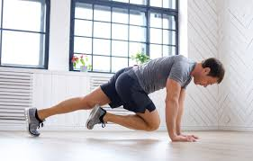
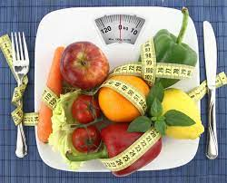

Новые статьи
Топ-10 силовых упражнений с гантелями на руки для женщин
(укрепляем бицепсы и трицепсы)
viewing : 9174

Тренировка от дряблости рук после 50 лет: 8 простых
упражнений на каждый день
viewing : 31222
Разминка перед тренировкой на верхнюю часть тела (руки,
плечи, грудь, спина, пресс): 12 упражнений
viewing : 884
Топ-10 упражнений для похудения мужчинам после 50 лет
(подходит всем новичкам для ежедневной активности)
viewing : 1194
Топ-10 силовых упражнений с гантелями на плечи для женщин
(рельефные и подтянутые руки)
viewing : 1414
Йога для пожилых людей: 20 простых асан (подходит
новичкам)
viewing : 9214
Питание

Меню на неделю для веганов без мяса, рыбы и молока на 1500 ккал (с КБЖУ)
viewing : 312